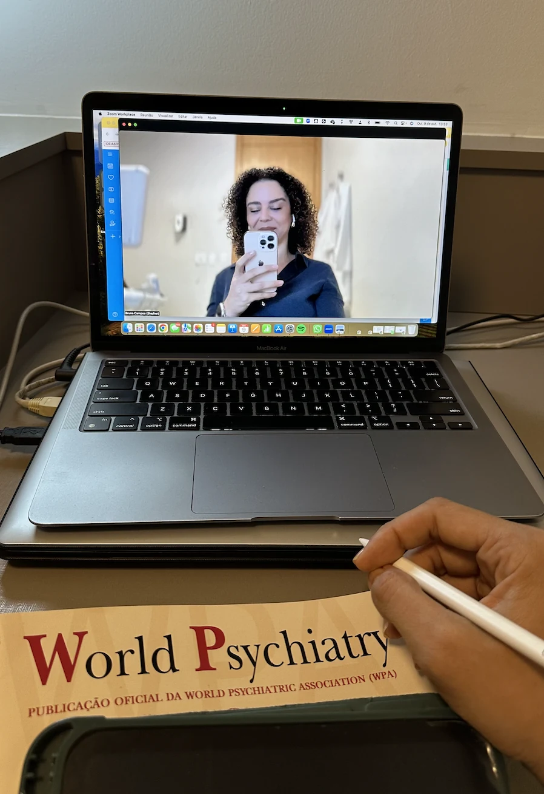

Ansiedade
Para quando a preocupação constante, a tensão e uma mente que não desacelera começam a ocupar espaço demais na rotina.
Conhecer mais
Médica psiquiatra · Barra da Tijuca, Rio de Janeiro
Atendimento psiquiátrico particular para adultos, na Barra da Tijuca ou por teleconsulta, com foco em ansiedade, depressão e TDAH em adultos.
Áreas de atendimento
Veja se alguma dessas demandas se aproxima do que você está vivendo.
Para quando a preocupação constante, a tensão e uma mente que não desacelera começam a ocupar espaço demais na rotina.
Conhecer maisPara quando o desânimo, a perda de interesse ou a sensação de estar apenas funcionando começam a pesar no dia a dia.
Conhecer maisPara adultos que convivem com dificuldades persistentes de foco, organização, impulsividade ou sensação de caos mental.
Conhecer maisAvaliação psiquiátrica para candidatos que precisam apresentar documentação de saúde mental em concursos públicos.
Conhecer maisAvaliações de pacientes
Avaliações públicas no Google e no Doctoralia, reproduzidas na íntegra. Apenas os nomes foram abreviados para preservar a privacidade.
“Dra. Bruna é fantástica!! Transformou minha vida, pois me curou, sou e serei eternamente grata. Desejo que ela continue sendo essa médica humana, paciente e atenciosa! Super indico, ela é 1000!!!”
“Me consultar com a Dra Bruna foi um dos melhores investimentos que pude fazer na minha saúde. Após anos com diagnóstico errado e tratamentos que não funcionavam, com suas consultas incríveis que avaliam de forma adequada o histórico do paciente, conseguimos chegar num diagnóstico que mudou minha vida! Recomendo a todos de olhos fechados. Dra Bruna é uma profissional incrível.”
“A Dra Bruna é simplesmente maravilhosa!! Cuidadosa, competente, ética, confiante e profissional no diagnóstico. Eu sou paciente há 9 anos e sou apaixonada por ela e pelo trabalho e atendimento!! Juju secretaria TB é um docinho!!💕 Mil estrelas 🌟🌟🌟🌟🌟”
“Excelente profissional, muito atenciosa, está sempre sempre quando solicitada pelo e-mail, responde na hora. Eu não tenho o que reclamar, estou muito satisfeito por ser minha médica.”
“A escuta, o acolhimento e as condutas da Bruna não só são absolutamente eficazes aos desafios urgentes levados na consulta, como as contribuições e o acompanhamento com ela transformaram a forma de estar na vida para melhor. Atualizadíssima e impecável. Recomendo 100%.”
“Dra Bruna é maravilhosa! Quebrou o tabu e preconceito que eu tinha de remédio e psiquiatria.. é super atenciosa, paciente e dedicada. Desejo que todas as pessoas que estejam precisando de ajuda tenha a mesma sorte que eu tive de encontrá-la.”
Formação e trajetória
Graduação, residência e formações complementares que fazem parte da minha trajetória na psiquiatria.
Como funciona o atendimento
A primeira consulta é mais longa; as consultas de seguimento acompanham a evolução e permitem revisar o plano de cuidado.
Primeira consulta
Consultas de seguimento
Modalidades e pagamento
Sobre mim
Médica Psiquiatra
CRM 5291655-2 · RQE 23225
Atendimento particular de adultos
Meu trabalho parte de uma ideia simples: uma consulta psiquiátrica precisa de tempo para compreender os sintomas, a história, o contexto e a pessoa que está vivendo tudo aquilo.
Ao longo de 15 anos de medicina e mais de 4.500 atendimentos, construí uma prática voltada para adultos que procuram uma avaliação cuidadosa, individualizada e baseada em evidências.
Sou médica formada pela Universidade Federal Fluminense (UFF), onde também fiz minha Residência Médica em Psiquiatria. Além das várias formações complementares na área de Saúde Mental, também sou empresária. Em 2021 fundei a BC Academy, uma escola de carreira médica no consultório particular que já treinou mais de 600 médicos, e o Vida de Consultório, o primeiro portal sobre carreira médica no consultório particular do Brasil.

Presença digital
Acompanhe conteúdos sobre psiquiatria, saúde mental e ciência em linguagem acessível.
Atendimento presencial particular para adultos na Barra da Tijuca, no Rio de Janeiro.

Atendimento on-line para adultos, conforme indicação clínica e regulamentação vigente do CFM.
Perguntas frequentes
Sim. O atendimento presencial é realizado na Barra da Tijuca, no Rio de Janeiro.
Sim. Há atendimento por teleconsulta, conforme indicação clínica e regulamentação vigente do CFM.
A primeira consulta tem duração aproximada de 1h30. As consultas de seguimento têm duração aproximada de 50 minutos.
A primeira consulta tem o valor de R$ 1.100 e as consultas de seguimento, R$ 850. O pagamento pode ser realizado em até 3x no cartão de crédito.
Sim. Os atendimentos são apenas particulares. A Dra. Bruna é psiquiatra com mais de 15 anos de experiência, formada pela Universidade Federal Fluminense. As consultas são longas, com tempo necessário para ela entender todo o seu problema, ver os seus exames mais recentes, examinar com calma e avaliar a melhor conduta possível. E para conseguir manter essa qualidade de atendimento, com o tempo e atenção necessários para cada paciente, a Dra. Bruna não atende por plano de saúde. Mesmo assim, muitos pacientes fazem questão de serem atendidos por ela e, depois, solicitam reembolso junto ao plano.
Agendamento
Atendimento psiquiátrico particular para adultos, presencialmente na Barra da Tijuca ou por teleconsulta.